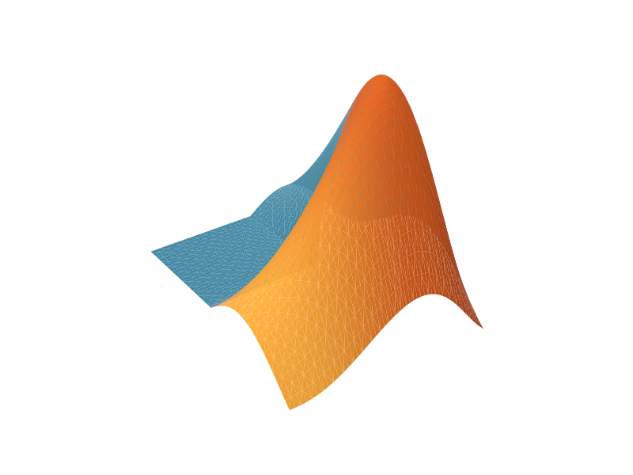

Built a deterministic C++20 heat-method solver for genus 1–3 triangle meshes, assembling cotangent-Laplacian and lumped-mass operators and factoring heat and pinned-Poisson systems with Eigen; preprocessed 45K vertices and 91K faces in 180 ms, then answered queries in 6.15 ms with < 2e-13 relative residuals and exported native paths to Three.js.
Education · 1/2
University of Chicago
Sept 2025 – Dec 2026M.S. in Computer Science
Concentration | Artificial Intelligence - Foundations
Teaching Assistant Experience
- CMSC 27230 | Honors Theory of Algorithms
- MPCS 55001 | Algorithms
- MPCS 50103 | Mathematics for Computer Science: Discrete Mathematics
Education · 2/2
Drexel University
Sept 2020 – Jun 2025B.S. in Computer Science & B.A. in Mathematics
Concentrations | Algorithms & Data Structures, Artificial Intelligence
Magna Cum Laude
Teaching Assistant Experience
- CS 260 | Data Structures
- CS 277 | Algorithms & Analysis
- CS 380 | Artificial Intelligence
- CS 615 | Deep Learning
Academic Awards
- A* Award
- Jeffrey L. Popyack Teaching Assistant Award
- Student Teaching Excellence Award
Industry Experience · 1/2

MathWorks
Jun 2026 – Sept 2026Software Engineering Intern
Boston, MA- Re-engineered a MATLAB tetrahedral point-location query loop in a C++ MEX prototype, cutting runtime from 55.1 s to 9.77 s (5.64×) across 570,603 queries via inline barycentric solves, expanding-radius KD-tree search, and AABB filtering; performed 4.6× fewer candidate checks and 138× fewer solves with 0 mismatches against the shipped engine.
- Built an internal-marketplace Claude skill that audited 79 MATLAB functions and found 110+ error-message defects; automated 100-run multi-agent repair evaluations with up to 4 attempts and produced evidence-backed rewrites in HTML.
- Expanded Import and Analyze Data, the team's Claude skill, for new MATLAB releases with 8+ coverage improvements and 3 evaluations; demonstrated its advantage over a no-skill baseline across 12 end-to-end workflows.
- Optimized MATLAB APIs spanning missing-data detection, array shifts, convex-hull construction, and scattered interpolation; extended C++ kernels for speedups up to 2.2× and added 4 performance benchmarks plus 28 correctness tests.
Industry Experience · 2/2
Resolution Life US
Apr 2024 – Sept 2024Data Science Intern
Philadelphia, PA- Built an automated AWS ingestion and orchestration pipeline that replaced a $380K/year vendor Excel workflow: S3-triggered Lambda loaded Bloomberg/ICE files, Athena queried the stored data, and Step Functions coordinated 54 dependent jobs.
- Recreated vendor fixed-income time-series calculations in Apache Spark (PySpark) across 4 rate instruments using instrument-specific U.S. holiday calendars, normalization, and linear/cubic-spline interpolation; delivered an 8,314 × 63 production dataset matching vendor rates within 1e-3 absolute error.
- Fine-tuned FinBERT for fixed-income sentiment classification, filtering company news for bond-specific language and producing normalized negative/neutral/positive issuer scores; delivered reports to Portfolio Analytics for screening and valuation.
- Automated a manual claims-interest workflow with Excel/VBA and XLOOKUP, encoding state-specific rules for dates of death, reporting windows, and policy details; saved 10+ hours/week of manual lookup.
Personal Projects · 2/2
Built a Python study of Q-learning and Hedge in atomic Braess routing across 64 seeds and 5,000 episodes; solved equilibrium and welfare over a 5.0-billion-profile state space at 100K agents via an exact constant-size discrete-convex reduction, measured 23.7% inefficiency, and derived marginal-cost tolls restoring the social optimum.
personal notes
California Institute of Technology
Massachusetts Institute of Technology
- Distributed Systems
- Introduction to Algorithms
- Linear Algebra
- Principles of Discrete Applied Mathematics
- Principles of Macroeconomics
- Probabilistic Systems Analysis and Applied Probability
- Single Variable Calculus